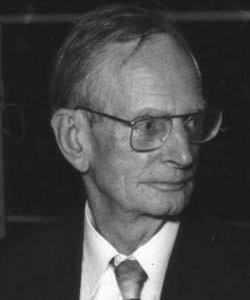

<div class="sidebar">
  <nav class="menu">
    <a href="news.html">[Update & News]</a>
    <a href="notes.html">Physics Notes</a>
    <a href="https://theses.hal.science/tel-04741096">PhD Thesis</a>
    <a href="research.html">Exploratory Projects</a>
    <a href="about_me.html">About Me</a>
  </nav>

  <div class="monthly-theorem">
    <h3>Monthly Highlight</h3>

    

    <a href="https://fr.wikipedia.org/wiki/Georges_de_Rham"
       class="theorem-link">
      <strong>Georges de Rham</strong><br>
      Georges de Rham (1903–1990) was a Swiss mathematician whose work connected differential forms with the topology of spaces. 
      His ideas led to de Rham cohomology, which shows how differential forms can reveal global properties of a 
      space that cannot be seen from local calculus alone.
    </a>

    <br><br>

    <div class="menu">
      <a href="physicists.html">
        Check the previous highlights!
      </a>
    </div>
  </div>
</div>